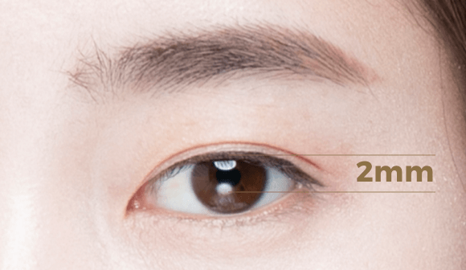

졸린듯한 눈을
생기있고 뚜렷하게!
#눈매교정
[안검하수]
-

수술 시간
1시간
-

마취방법
수면/국소마취
-

실밥제거
4~5일후
-

내원치료
1~2회
-

회복기간
개인차 있음
안검하수 눈매교정이란?
일반적으로 자연스럽게 눈을 떴을 때
검은 눈동자가 60%보이면
예쁜 눈이라고 합니다.
눈매교정은 눈꺼풀이 눈동자를 많이 가려
졸리고 피곤해 보이는 안검하수를
교정하여 검은 눈동자와 흰 눈동자의
노출 양을 교정함으로써 또렷한
눈매를 만들 수 있는 수술입니다.


안검하수 자가진단
동공에서 윗 눈꺼풀의 사이의
거리는 5mm정도가 정상적인
눈의 범위에속합니다.
2mm이하인 경우 '안검하수'로
진단되어 눈매교정이 필요하게 됩니다.
'안검하수'는 윗눈꺼풀을 올리는
근육의 힘이 약해져 눈꺼풀이 아래로
처져 흐릿하고 졸린 눈으로 보이는
경우를 말합니다.
-
정상눈꺼풀인 경우
눈동자 중심으로부터 5mm정도 노출
-
안검하수인 경우
눈동자 중심으로부터 2mm정도 노출
나에게 맞는 수술법은?
눈매교정 수술방법
-
특징
-
피부절개 없이
눈을 뜨는 근육을
조절하여 보다
자연스러운
수술 방법 -
피부절개를 통해
지방과 근육, 피부
등을 일정량
제거하며 눈을
뜨는 근육을
강화하는 수술방법
-
대상
-
눈을 뜰때 눈썹을
많이 올리는 경우쌍꺼풀 수술을
했지만 눈이
또렷하지 않은 경우
쌍꺼풀 수술 없이
또렷한 눈매를
만들고 싶은 경우
졸려 보인다는
말을 자주 듣는
경우
정도가 심하지
않은 안검하수의
경우
-
쌍꺼풀 수술을
했지만 눈이
답답해 보이거나
큰 변화가 없는 경우
눈을 뜰때 눈썹을
많이 올리거나
이마의 주름이
심한 경우
눈꺼풀이 검은
눈동자를 1/3이상
가리는 경우
-
교정정도
-
심한 경우
교정이 어려움
-
심한 경우에도
완벽 교정 가능
-
붓기정도
-
붓기 거의 없음
-
붓기 있음
눈매교정
수술방법
비절개
눈꺼풀 안쪽에 실을 넣어 근육의 일부를
서로 맞닿게 묶어주어 근육의 길이를
줄여주는 방식으로,
미용적으로 눈의 세로길이를 늘기를 원할
때, 중증 이하의 심하지 않은 안검하수
교정에 효과적입니다.
-

수술 전 원인 파악을 위해
정밀 검사 후 충분한 상담이
이뤄집니다.
-

눈꺼풀에 미세한 구멍을 생성합니다.
-
눈을 정상적으로 뜰 수 있도록 근육의
장력을 조절하여 당겨줍니다. -

수술 후 자연스러우며 또렷하고
선명한 눈매를 완성합니다.
눈매교정
수술방법
절개
시원하고 또렷한 눈매를 위해 연세자연미는
자세한 상담과 진단을 통해 가장 효과적인
방법으로 수술을 진행합니다.
-
수술 전 원인 파악을 위해
정밀 검사 후 충분한 상담이
이뤄집니다.
-
디자인된 라인을 따라 절개를 한 뒤,
불필요한 조직을 제거합니다. -
눈을 정상적으로 뜰 수 있도록
근육의 장력을 조절하여 당겨줍니다. -

수술 후 자연스러우며 또렷하고
선명한 눈매를 완성합니다.
눈매교정
수술방법
핵심 포인트
시원하고 또렷한 눈매를 위해
연세자연미는 자세한 상담과 진단을
통해 가장 효과적인 방법으로 수술을
진행합니다.
01
또렷한 눈매 완성
단순한 쌍꺼풀 수술이 아닌
눈매교정을 통해 또렷한
눈매를 만듭니다.
02

1:1 맞춤 수술 시행
개인마다 다른 얼굴 구조나
피부 특성에 따라 적합한
수술방법으로 시행합니다.
03

일상생활 빠른 복귀
미세한 구멍 또는 섬새한 절개를 통해
흉터나 붓기가 적습니다.